Your factory makes the ammo. The turrets protect the factory.Die Fabrik baut die Munition. Die Türme schützen die Fabrik.
FICSIT Tower Defense turns Satisfactory into a factory-fed tower defense. A FICSIT Defense Core stands in your start biome, and waves of native fauna attack it from up to three fronts. Every turret fires real ammunition from your own production lines, delivered by conveyor belt or pipe. Fifty waves lead you from simple iron rebar to plasma flames.
FICSIT Tower Defense macht aus Satisfactory ein Tower Defense, das von deiner Fabrik lebt. Ein FICSIT-Abwehrkern steht in deinem Startbiom, und Wellen der heimischen Fauna greifen ihn aus bis zu drei Richtungen an. Jeder Turm verschießt echte Munition aus deinen eigenen Produktionsketten, per Förderband oder Rohr. Fünfzig Wellen führen vom einfachen Armierungsbolzen bis zur Plasmaflamme.
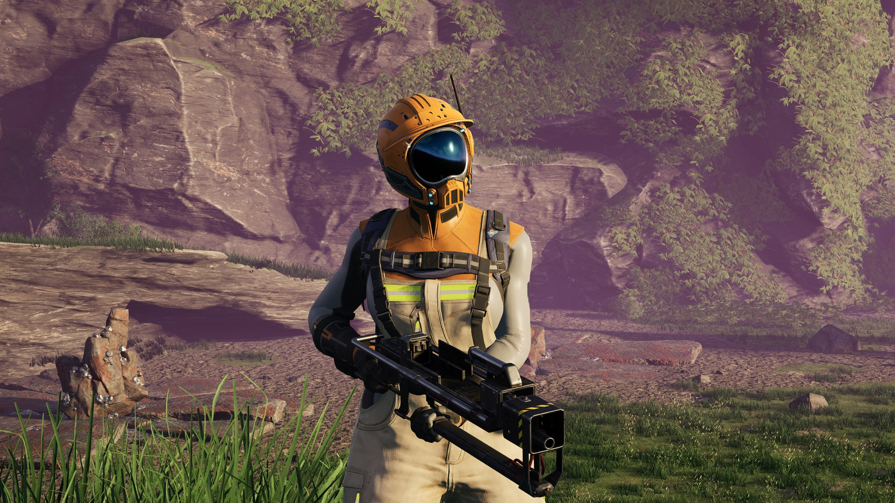
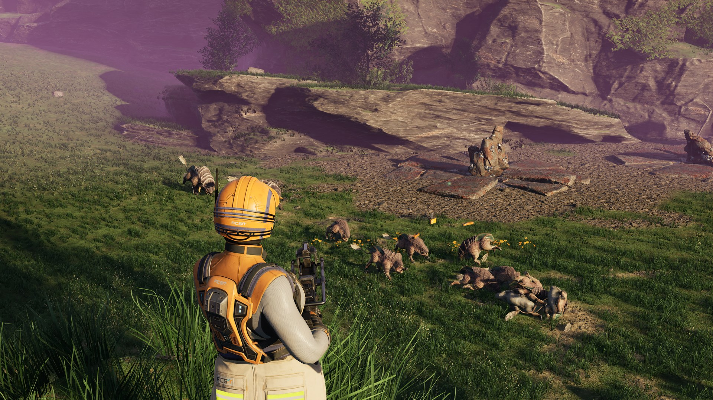
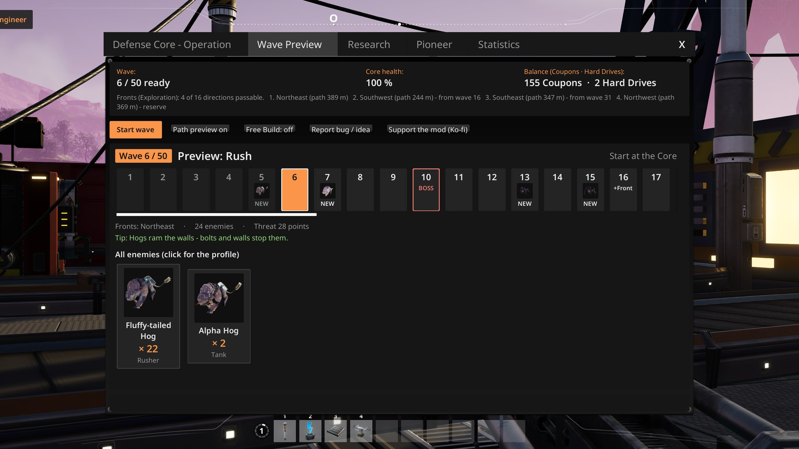
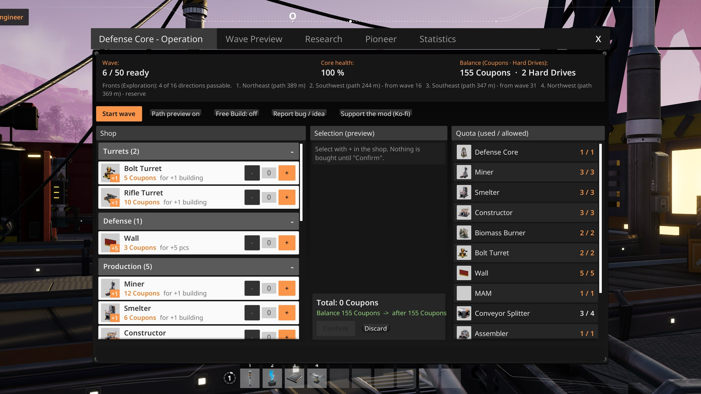
Quick startSchnellstart
How an operation worksSo läuft ein Einsatz
Build phaseAufbauphase
- No time pressure. You start the next wave yourself; the Core then lists turrets without ammo or power in the chat (it does not hold the wave).
- Quotas: production and defense buildings are limited per type. Logistics is free: belts, lifts, pipes, power lines, foundations. Splitters, mergers, storage containers and fluid buffers count as buildings and are bought in the shop.
- FICSIT Coupons from the Core land in your inventory as the game's Coupon item (if it is full, they wait at the Core). They buy more quota in the shop, plus gear and core repairs. Turret levels are bought in the turret window.
- New technology only comes from the MAM (Hard Drives from waves). HUB milestones and blueprints are locked during an operation.
- Ohne Zeitdruck. Die nächste Welle startest du selbst; der Kern nennt dann im Chat Türme ohne Munition oder Strom (er hält die Welle nicht an).
- Kontingente: Produktions- und Verteidigungsgebäude sind je Typ begrenzt. Logistik ist frei: Bänder, Lifte, Rohre, Stromleitungen, Fundamente. Splitter, Verbinder, Lager und Flüssigkeitspuffer zählen wie Gebäude und werden im Laden gekauft.
- FICSIT-Coupons vom Kern landen als Coupon-Item des Spiels im Inventar (ist es voll, warten sie am Kern). Sie kaufen im Laden mehr Kontingent, Ausrüstung und Kernreparatur. Turmlevel kauft man im Turmfenster.
- Neue Technik gibt es nur im MAM (Festplatten aus den Wellen). Meilensteine am HUB und Blaupausen sind im Einsatz gesperrt.
WaveWelle
- Enemies walk real paths from 1–3 fronts to the Core. All defenses heal to 100 % when a wave starts.
- Inside the defense zone you cannot place quota buildings while a wave runs, and turrets and defenses cannot be dismantled there (0.11). Logistics and power still work.
- You cannot save during a wave. The mod saves before and after every wave.
- After the wave: Coupons and Hard Drives in your inventory, biomass and a small core repair. The report shows your best turrets and your own damage share.
- Gegner laufen echte Wege aus 1–3 Fronten zum Kern. Zu Beginn heilen alle Verteidigungsbauten auf 100 %.
- Im Verteidigungsfeld kannst du während der Welle keine Kontingent-Gebäude setzen, und Türme und Abwehrbauten lassen sich dort nicht abreißen (0.11). Logistik und Strom gehen weiter.
- In der Welle kann nicht gespeichert werden. Der Mod speichert vor und nach jeder Welle.
- Nach der Welle: Coupons und Festplatten im Inventar, Biomasse und eine kleine Kernreparatur. Der Bericht zeigt die besten Türme und deinen eigenen Schadensanteil.
Victory and defeatSieg und Niederlage
Pick the difficulty under Difficulty in the session settings (Exploration, Normal, Hard, Nightmare); by default it follows your start biome. It sets Core health, when elites appear and when new fronts open. Hard and Nightmare are still untested. An operation has 50 waves in five phases, with a boss every tenth wave. After waves 10, 20, 30 and 40 you get a short phase report and pick a bonus at the Core: Coupons, permanently more Core HP or Hard Drives. Losing never deletes your factory. If the Core falls, the Core Menu offers Retry wave (loads the save from the start of that wave) or End operation (no more quotas, the world stays free to keep building and no new operation starts in this save). After victory or defeat a final report shows the whole run, and your best result per core site and difficulty is saved. A new run is a new game.
Die Schwierigkeit wählst du in den Sitzungseinstellungen unter Stufe (Erkundung, Normal, Hart, Albtraum); Standard ist dein Startbiom. Sie bestimmt Kern-LP, ab wann Eliten kommen und wann neue Fronten öffnen. Hart und Albtraum sind noch ungetestet. Ein Einsatz hat 50 Wellen in fünf Phasen, jede zehnte Welle mit Boss. Nach Welle 10, 20, 30 und 40 gibt es einen kurzen Phasenbericht und am Kern einen Bonus zur Wahl: Coupons, dauerhaft mehr Kern-LP oder Festplatten. Eine Niederlage löscht nie deine Fabrik. Fällt der Kern, bietet das Kern-Menü Welle wiederholen (lädt den Stand vom Start dieser Welle) oder Einsatz beenden (keine Kontingente mehr, die Welt bleibt frei zum Weiterbauen, in diesem Spielstand startet kein neuer Einsatz). Nach Sieg oder Niederlage zeigt ein Abschlussbericht den ganzen Lauf, und dein bestes Ergebnis je Kernplatz und Stufe wird gespeichert. Ein neuer Lauf ist ein neues Spiel.
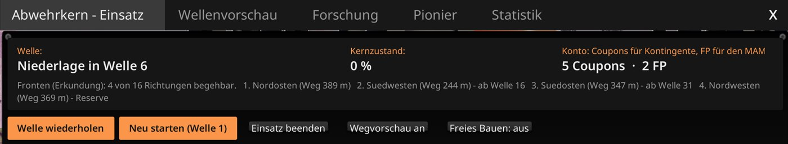
TurretsTürme
Ammo per item (0.11): one item lasts for several actions – basic ammo 4 shots, tier 2 three, tier 3 two; rifle ammo 3/2/1 magazines per item. The turret window shows the consumption per minute and how many turrets a Mk.1 belt feeds. A full Mk.1 iron node feeds 4–5 bolt turrets with basic bolts; Miner Mk.2/Mk.3 and belts up to Mk.5 come from the MAM (Industry). New in the shop with Coal Power research: Power Storage against load peaks (e.g. Tesla Coils charging).
Turrets are machines: you pick the ammo recipe in the machine window, and each production cycle is one action (shot, magazine, discharge or one second of flame). Every line has an ammo ladder: each step needs one more ingredient and does more. Levels 1–5 are bought with Coupons in the turret window and are visible on the model; level 5 unlocks a master ability.
Munition je Stück (0.11): Ein Stück reicht für mehrere Aktionen – Grundmunition 4 Schuss, Stufe 2 drei, Stufe 3 zwei; Gewehrmunition 3/2/1 Magazine je Stück. Das Turmfenster zeigt den Verbrauch pro Minute und wie viele Türme ein Band Mk1 versorgt. Ein voller Mk1-Eisenknoten versorgt 4–5 Bolzentürme mit Armierungsbolzen; Miner Mk2/Mk3 und Bänder bis Mk5 gibt es im MAM (Industrie). Neu im Laden mit der Forschung Kohlekraft: der Akku gegen Lastspitzen (z. B. ladende Teslaspulen).
Türme sind Maschinen: Im Maschinenfenster wählst du das Munitionsrezept, und jeder Produktionszyklus ist eine Aktion (Schuss, Magazin, Entladung oder eine Sekunde Flamme). Jede Linie hat eine Munitionsleiter: Jede Stufe braucht eine Zutat mehr und kann mehr. Level 1–5 kaufst du mit Coupons im Turmfenster, sie sind am Modell zu sehen; Level 5 schaltet eine Meisterfähigkeit frei.
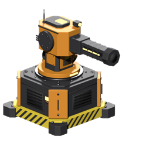
PiercingDurchschlagBolt TurretBolzenturm
- Rebar bolt (40) → piercing bolt (hits up to 2 more)
- Branch: shrapnel bolt (splits) or stun bolt (electric, 3 s stun)
- Late: explosive bolt
- Master: twin barrel
- Armierungsbolzen (40) → Durchschlagbolzen (trifft bis zu 2 weitere)
- Gabelung: Streubolzen (zerfällt) oder Schockbolzen (Strom, 3 s betäubt)
- Spät: Explosivbolzen
- Meister: Doppellauf
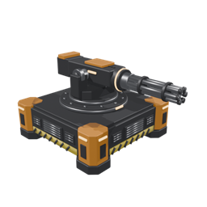
BulletKugelRifle TurretGewehrturm
- Rifle ammo (12 per shot, continuous fire)
- Branch: homing or armor-piercing
- Incendiary ammo → turbo ammo (double fire rate)
- Master: belt drum, +25% fire rate
- Gewehrmunition (12 je Schuss, Dauerfeuer)
- Gabelung: Zielsuch oder panzerbrechend
- Brandmunition → Turbomunition (doppelte Feuerrate)
- Meister: Gurttrommel, +25 % Feuerrate
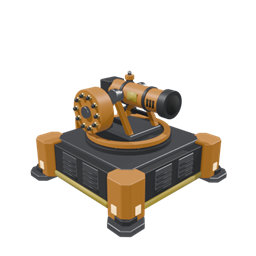
ExplosionExplosionNobelisk LauncherNobelisk-Werfer
- Nobelisk (150, area damage, lobbed)
- Branch: gas cloud (poison) or pulse (2 s stun)
- Late: cluster nobelisk
- Master: salvo of three
- Nobelisk (150, Flächenschaden, im Bogen)
- Gabelung: Gaswolke (Gift) oder Puls (2 s betäubt)
- Spät: Streu-Nobelisk
- Meister: Salve aus drei
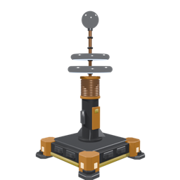
ElectricStromTesla CoilTeslaspule
- No ammo, needs power: 15 MW idle, 125 MW while charging
- Chain lightning to 3 more enemies
- Branch: bigger chain or overload (×2.5 on one target)
- Battery bank, high voltage; master: voltage field
- Keine Munition, braucht Strom: 15 MW Grundlast, 125 MW beim Aufladen
- Kettenblitz auf 3 weitere Gegner
- Gabelung: längere Kette oder Überlast (×2,5 auf ein Ziel)
- Akkubank, Hochspannung; Meister: Spannungsfeld
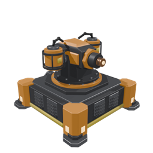
FireFeuerFlamethrowerFlammenwerfer
- Fuel by pipe: 80 damage/s in a cone, afterburn
- Turbofuel 120 → rocket fuel 140 → ionized fuel 160 (electric)
- Afterburn stacks while the flame stays on target
- Master: fire carpet
- Treibstoff per Rohr: 80 Schaden/s im Kegel, Nachbrennen
- Turbotreibstoff 120 → Raketentreibstoff 140 → ionisierter Treibstoff 160 (Strom)
- Nachbrennen stapelt, solange die Flamme auf dem Ziel bleibt
- Meister: Feuerteppich
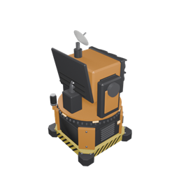
AirLuftSky Tower and SingularityHimmelsturm und Singularität
Late turrets: the Sky Tower fires flak at flying enemies (flyers are still in development). The Singularity Launcher holds and crushes groups; it unlocks after wave 50, so only in Endless mode. Its ammo, Ficsonium, is radioactive: turrets shield their ammo storage, but carrying it exposes you – the research also unlocks the Hazmat Suit and Iodine Filters.
Späte Türme: Der Himmelsturm schießt Flak auf fliegende Gegner (die Flieger sind noch in Arbeit). Der Singularitätswerfer hält Gruppen fest und zerdrückt sie; er wird erst nach Welle 50 frei, also nur im Endlos-Modus. Seine Munition Ficsonium ist radioaktiv: Türme schirmen ihr Munitionslager ab, beim Tragen strahlt sie aber – die Forschung schaltet deshalb auch Hazmat-Anzug und Iod-Filter frei.
CombosKombos
| ComboKombo | EffectWirkung |
|---|---|
| Lightning Rod | Tesla lightning prefers enemies with a stuck bolt and jumps once more at full strength. |
| Heat Crack | Burning enemies lose their armor against bullets and bolts. |
| Deflagration | A flame ignites the gas cloud of a gas nobelisk. |
| Oil Fire | Fire ignites a wet oil slick field: 5 s burning, walkers keep burning. |
| Chokepoint | Bolts pierce one extra enemy near a gate. |
| Rally Point | Enemies held by a lure fire take 25 % more explosion damage. |
| Conductor | An electric fence passes Tesla discharges to up to 3 enemies touching it. |
| Blitzableiter | Der Tesla-Blitz springt bevorzugt auf Gegner mit steckendem Bolzen und springt einmal mehr mit voller Kraft. |
| Hitzeriss | Brennende Gegner verlieren ihre Panzerung gegen Kugeln und Bolzen. |
| Verpuffung | Eine Flamme entzündet die Gaswolke eines Gas-Nobelisken. |
| Ölbrand | Feuer entzündet ein nasses Ölschlick-Feld: 5 s Brand, wer hindurchläuft, brennt weiter. |
| Engstelle | Am Tor durchschlagen Bolzen einen Gegner mehr. |
| Sammelpunkt | Vom Lockfeuer festgehaltene Gegner nehmen 25 % mehr Explosionsschaden. |
| Leiter | Ein Elektrozaun leitet Tesla-Entladungen an bis zu 3 Gegner, die ihn berühren. |
Defensive buildingsVerteidigungsbauten
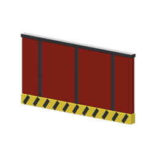
Walls and GateMauern und Tor
Enemies attack what blocks their path. The gate lets you and vehicles through; without power it stays open during a wave.
Gegner greifen an, was ihnen den Weg versperrt. Das Tor lässt dich und Fahrzeuge durch; ohne Strom bleibt es in der Welle offen.
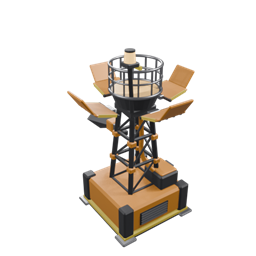
Lure FireLockfeuer
Burns coal and pulls all enemies within 40 m for 15 s, then rests 30 s. Steer waves onto your turret groups.
Verbrennt Kohle und zieht 15 s lang alle Gegner in 40 m an, dann 30 s Pause. Lenkt Wellen auf deine Turmgruppen.
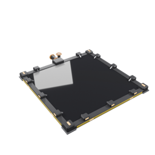
Oil Slick FieldÖlschlick-Feld
8 × 8 m plate fed with heavy oil residue: enemies on it walk 35 % slower. Fire turns it into a trap.
8 × 8 m Platte mit Schwerölrückstand: Gegner darauf laufen 35 % langsamer. Feuer macht daraus eine Falle.
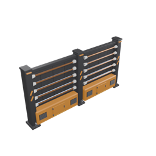
Electric FenceElektrozaun
Blocks like a wall; attackers get shocked and stunned. Works with the Tesla Coil.
Blockt wie eine Mauer; wer angreift, bekommt einen Schlag und ist betäubt. Arbeitet mit der Teslaspule.
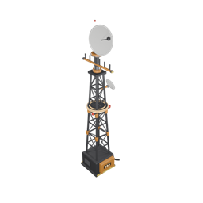
Radio MastFunkmast
+10 % range for turrets within 30 m, shows nearby resources and marks every front with enemy types 30 s before a wave.
+10 % Reichweite für Türme in 30 m, zeigt Rohstoffe in der Nähe und markiert 30 s vor der Welle jede Front mit den Gegnerarten.
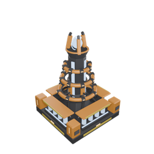
Shield GeneratorSchildgenerator
A 20 m dome absorbs damage on buildings (not the Core) and recharges.
Eine Kuppel mit 20 m schluckt Schaden an Bauten (nicht am Kern) und lädt sich wieder auf.
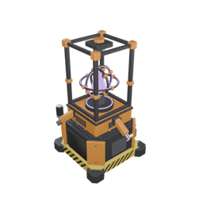
Jammer ProjectorStörfeld-Projektor
Slows all enemies within 15 m to 60 % speed. Late game, needs reanimated SAM.
Bremst alle Gegner in 15 m auf 60 % Tempo. Spätes Spiel, braucht reanimiertes SAM.
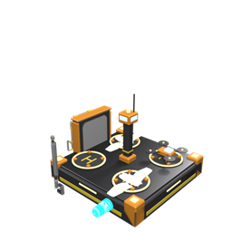
Drone PadDrohnenplatz
Repair drones or combat drones, 2–4 drones by level. They fly to damaged buildings or to enemies within 40 m.
Reparaturdrohnen oder Kampfdrohnen, 2–4 Drohnen je nach Level. Sie fliegen zu beschädigten Bauten oder zu Gegnern in 40 m.
Enemies and phasesGegner und Phasen
| PhasePhase | WavesWellen | New enemiesNeue Gegner |
|---|---|---|
| 1 The Herd | 1–10 | Hog, Alpha Hog (5), Cliff Hog (7) |
| 2 The Swarm | 11–20 | Small Stinger (13), Stinger (15) |
| 3 Acid | 21–30 | Spitter (21), Red Spitter (25), Alpha Spitter (28) |
| 4 Foreign Biomes | 31–40 | Red Alpha Spitter (34), Desert and Water Spitters, Elite Stinger (38) |
| 5 Radiation | 41–50 | Nuclear Hog (41), Johnny (46) |
| 1 Die Herde | 1–10 | Hog, Alpha-Hog (5), Klippen-Hog (7) |
| 2 Der Schwarm | 11–20 | Kleiner Stinger (13), Stinger (15) |
| 3 Säure | 21–30 | Spucker (21), Roter Spucker (25), Alpha-Spucker (28) |
| 4 Fremde Biome | 31–40 | Roter Alpha-Spucker (34), Wüsten- und Wasserspucker, Elite-Stinger (38) |
| 5 Strahlung | 41–50 | Nuklear-Hog (41), Johnny (46) |
Every tenth wave is a boss fight. Elites have 2.5× health and are tinted; they appear from wave 16 on Normal (Exploration 18, Hard 7, Nightmare 5). Wave enemies never attack the player, only your defenses and the Core.
Jede zehnte Welle ist ein Bosskampf. Eliten haben 2,5-fache Lebenspunkte und sind eingefärbt; sie kommen auf Normal ab Welle 16 (Erkundung 18, Hart 7, Albtraum 5). Wellengegner greifen nie den Spieler an, nur deine Verteidigung und den Kern.
Resistances (damage factor)Resistenzen (Schadensfaktor)
| PiercingDurchschlag | BulletKugel | FireFeuer | ElectricStrom | Explosion | PoisonGift | |
|---|---|---|---|---|---|---|
| Hog | 1 | 0.75 | 1 | 1 | 1.25 | 1 |
| Stinger | 0.8 | 1.25 | 1.2 | 1.2 | 0.85 | 1 |
| SpitterSpucker | 1 | 1 | 1.3 | 0.85 | 1 | 1 |
| Desert SpitterWüstenspucker | 1 | 1.2 | 0.75 | 1 | 1 | 1 |
| Water SpitterWasserspucker | 1 | 1 | 0.8 | 1.3 | 1 | 1 |
Research, gear and the PioneerForschung, Ausrüstung und Pionier
MAM
- Four trees: Industry (machines, steel, oil, belts), Ballistics (bolt, rifle, nobelisk), Elemental (tesla, flame), Fortress (core, walls, doctrines, turret fabrication).
- Paid only with Hard Drives from waves (since 0.10.0 the game's own Hard Drive; the game's Hard Drive research for alternate recipes is locked during an operation). Nodes unlock from a certain wave.
- Branches: only one side per operation. A red X marks the side you can no longer research.
- Doctrine: pick one main turret line for more damage and cheaper levels.
- Vier Bäume: Industrie (Maschinen, Stahl, Öl, Bänder), Ballistik (Bolzen, Gewehr, Nobelisk), Elementar (Tesla, Flamme), Festung (Kern, Mauern, Doktrinen, Turmfertigung).
- Bezahlt nur mit Festplatten aus den Wellen (seit 0.10.0 die Festplatte des Spiels; deren eigene Forschung für Alternativrezepte ist im Einsatz gesperrt). Knoten werden ab einer bestimmten Welle frei.
- Gabelungen: nur eine Seite je Einsatz. Ein rotes X markiert die Seite, die du nicht mehr erforschen kannst.
- Doktrin: eine Hauptlinie wählen, mehr Schaden und billigere Level.
Shop gear and the PioneerAusrüstung und Pionier
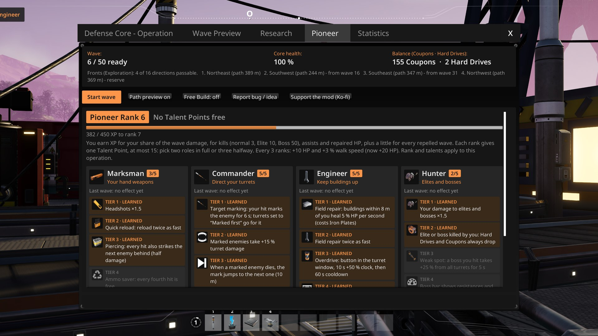
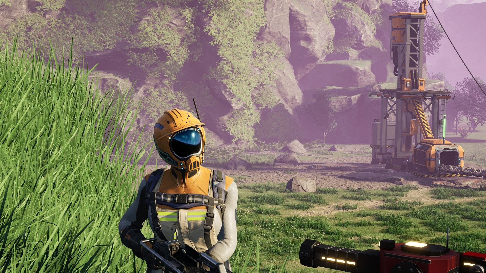
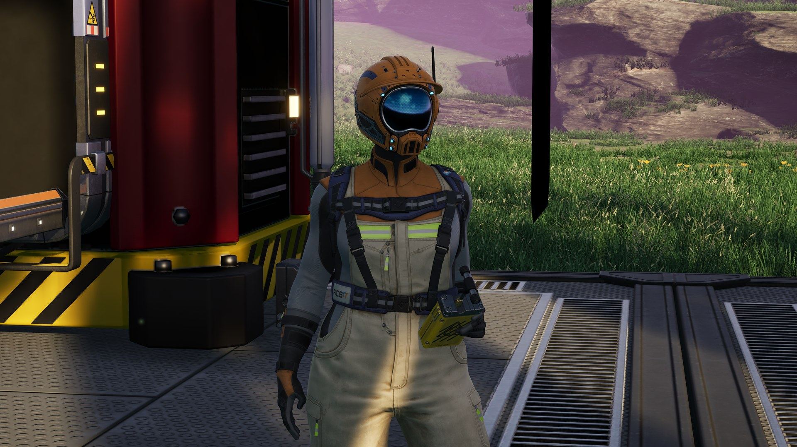
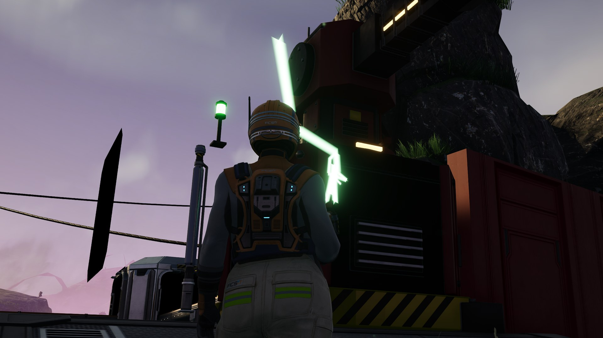
- The shop sells inventory slots, hand slots, Rebar Gun, Blade Runners, Rifle, Nobelisk Detonator and Core repairs.
- Your hand weapons use the same ammo values as the turrets and grow with the waves. Resistances apply.
- Ranks and talents: waves and your own performance (damage share, repairs, kills, assists) give XP. Every rank gives one talent point, up to 15 points; rank and talents belong to the save, and every third rank adds +10 HP and +3 % running speed.
- Four roles with five steps each, every step a new ability. Take two roles fully or three halfway: Marksman (headshots, fast reload, pierce, ammo saving, explosive rounds), Commander (target marking, +15 % turret damage on marked enemies, marking jumps on, rally order, overdrive for all turrets nearby), Engineer (field repair with Iron Plates, overdrive button in the turret window: 10 s +50 % clock, resupply ammo, bulwark), Hunter (×1.5 against elites and bosses, guaranteed loot, weak spot, resistances on the boss bar, execution).
- Target marking (Commander): every hit you land marks the enemy (blue light above it), and the targeting mode “Marked first” makes a turret go for it. A turret kill on a marked enemy counts as your assist.
- The wave report shows your damage and share: “You: 1,240 damage (11 %), 9 kills, 3 assists”.
- The Pioneer tab in the Core Menu shows rank, XP, the four roles and what each role did in the last wave.
- Der Laden verkauft Inventarplätze, Handplätze, Armierpistole, Klingenläufer, Gewehr, Nobelisken-Zünder und Kernreparatur.
- Deine Handwaffen nutzen dieselben Munitionswerte wie die Türme und wachsen mit den Wellen. Resistenzen gelten.
- Rang und Talente: Wellen und deine eigene Leistung (Anteil am Schaden, Reparaturen, Abschüsse, Assists) bringen XP. Jeder Rang bringt einen Talentpunkt, höchstens 15; Rang und Talente gehören zum Spielstand, und jeder dritte Rang +10 LP und +3 % Lauftempo.
- Vier Rollen mit je fünf Stufen, jede Stufe eine neue Fähigkeit. Zwei Rollen ganz oder drei zur Hälfte: Schütze (Kopftreffer, Schnellladen, Durchschlag, Munition sparen, Sprengmantel), Kommandant (Zielmarkierung, +15 % Turmschaden an Markierten, Markierung springt weiter, Sammelbefehl, Übersteuern für alle Türme in der Nähe), Techniker (Feldreparatur mit Eisenplatten, Knopf Übersteuern im Turmfenster: 10 s +50 % Takt, Nachschub an Munition, Bollwerk), Jäger (×1,5 gegen Eliten und Bosse, sichere Beute, Schwachstelle, Resistenzen im Boss-Balken, Hinrichtung).
- Zielmarkierung (Kommandant): Jeder deiner Treffer markiert den Gegner (blaues Licht über ihm), und die Zielwahl „Markierte zuerst“ lässt einen Turm ihn bevorzugen. Erledigt ein Turm einen markierten Gegner, zählt das als dein Assist.
- Der Wellenbericht zeigt deinen Schaden und Anteil: „Du: 1240 Schaden (11 %), 9 Abschüsse, 3 Assists“.
- Der Reiter Pionier im Kern-Menü zeigt Rang, XP, die vier Rollen und was jede Rolle in der letzten Welle bewirkt hat.
Versions & changesVersionen & Änderungen
Current version: 0.11.0 (alpha), released on 20.11.2026. SMM shows your installed version in the mod list. All uploads: ficsit.app → View Versions.
Aktuelle Version: 0.11.0 (Alpha), veröffentlicht am 20.11.2026. Die installierte Version zeigt SMM in der Mod-Liste. Alle Uploads: ficsit.app → View Versions.
0.11.0 – Game modes: Endless waves and Free play with defense– Spielmodi: Endlos-Wellen und Freies Spiel mit Abwehr20.11.2026
- New: Game Mode Endless waves – timed waves from one direction that never stop, a break and a bonus pick after every boss wave, a best result per difficulty (see FAQ)
- New: Game Mode Free play with defense – regular Satisfactory plus turrets and an optional drilling challenge at resource nodes (see FAQ)
- New: an operation runs in five phases – a short report and a bonus pick after every tenth wave, a final report and a best result per core site and difficulty
- New: ammo lasts longer – one item fires several shots (basic 4, advanced 3, special 2; rifle ammo 3/2/1 magazines); the turret window shows consumption and how many turrets a Mk.1 belt feeds
- New in the MAM: Conveyor Belt Mk.4/Mk.5, Miner Mk.2/Mk.3; Power Storage in the shop after Coal Power; turrets shield their ammo storage, the Singularity research unlocks Hazmat Suit and Iodine Filters; ADA comments on new enemies and bosses
- Changed: difficulty in the session settings (Hard and Nightmare still untested); elites from wave 16 on Normal (was 13) and 18 on Exploration (was 15); Rifle Turret master tier +25 % fire rate; Game Mode “Off” is plain Satisfactory; test jump, Free Build and Restart are developer tools; one chat line per wave
- Fixed: enemies no longer get stuck on ore deposits, rock nodes, crab nests and bushes, less often at cliff overhangs; the wave panel fits on screen in large waves; floating lamps, black panels and flickering surfaces on towers removed; wave saves carry the session name
- Neu: Spielmodus Endlos-Wellen – Wellen auf Zeit aus einer Richtung ohne Ende, nach jeder Bosswelle Pause und Bonuswahl, Bestwert je Stufe (siehe FAQ)
- Neu: Spielmodus Freies Spiel mit Abwehr – normales Satisfactory mit Türmen und Bohrung auf Knopfdruck an Rohstoffknoten (siehe FAQ)
- Neu: Ein Einsatz läuft in fünf Phasen – nach jeder zehnten Welle Kurzbericht und Bonuswahl, am Ende Abschlussbericht und Bestwert je Kernplatz und Stufe
- Neu: Munition hält länger – ein Stück reicht für mehrere Schuss (Grund 4, besser 3, Spezial 2; Gewehrmunition 3/2/1 Magazine); das Turmfenster zeigt Verbrauch und wie viele Türme ein Band Mk1 versorgt
- Neu im MAM: Förderband Mk4/Mk5, Miner Mk2/Mk3; Akku im Laden nach Kohlekraft; Türme schirmen ihre Munition ab, die Forschung Singularität schaltet Hazmat-Anzug und Iod-Filter frei; ADA kommentiert neue Gegner und Bosse
- Geändert: Stufe in den Sitzungseinstellungen (Hart und Albtraum weiter ungetestet); Eliten auf Normal ab Welle 16 (vorher 13), auf Erkundung ab 18 (vorher 15); Gewehrturm-Meisterstufe +25 % Feuerrate; Spielmodus „Aus“ ist reines Satisfactory; Testsprung, Freies Bauen und Neu starten nur noch für Entwickler; eine Chatzeile je Welle
- Behoben: Gegner bleiben nicht mehr an Erzvorkommen, Steinknoten, Krabbennestern und Büschen hängen, seltener an Felsüberhängen; die Wellenleiste passt auch in großen Wellen ins Bild; schwebende Lampen, schwarze Platten und Flimmern an Türmen entfernt; Wellen-Spielstände tragen den Spielnamen
0.10.2 – Small fixes– Kleine Korrekturen15.11.2026
- Fixed: the Core and Tank Trap look-at text shows the real maximum health (including research) and is now translated
- Fixed: chat messages point to the Start wave button at the Core instead of a chat command
- Fixed: the shop text no longer lists the removed Tank Trap
- Performance: diagnostic tick measurements only run in developer mode
- Behoben: Der Blicktext von Kern und Panzersperre zeigt die echten maximalen LP (mit Forschung) und ist übersetzt
- Behoben: Chatmeldungen verweisen auf den Knopf Welle starten am Kern statt auf einen Chatbefehl
- Behoben: Die Laden-Ausgabe nennt die gestrichene Panzersperre nicht mehr
- Leistung: Diagnose-Messungen der Ticks laufen nur noch im Entwicklermodus
0.10.1 – Game mode menu and crash fix– Spielmodus-Menü und Absturz-Fix15.11.2026
- New: session settings category FICSIT Tower Defense with a Game Mode dropdown (Off / Operation) and a help text for each mode. More modes will follow
- Fixed: crash when a save was loaded twice within a few seconds
- Fixed: right after loading, the wave start could discard valid enemy fronts because the navigation was not ready yet
- Fixed: the ADA greeting follows the mod language setting
- Old saves keep working; the previous checkbox is still recognized
- Neu: Kategorie FICSIT Tower Defense in den Sitzungseinstellungen mit der Auswahl Spielmodus (Aus / Einsatz) und einem Hilfetext je Modus. Weitere Modi folgen
- Behoben: Absturz, wenn ein Spielstand zweimal innerhalb weniger Sekunden geladen wurde
- Behoben: Direkt nach dem Laden konnte der Wellenstart gültige Fronten verwerfen, weil die Navigation noch nicht bereit war
- Behoben: Die ADA-Begrüßung folgt der Sprache der Mod
- Alte Spielstände laufen weiter; die frühere Ankreuzbox wird weiter erkannt
0.10.0 – The Pioneer: four roles, 20 abilities, Hard Drives and Coupon items– Der Pionier: vier Rollen, 20 Fähigkeiten, Festplatten und Coupon-Items14.11.2026
- New: Pioneer talent tree with four roles (Marksman, Commander, Engineer, Hunter), five abilities each, up to 15 points per operation
- New: target marking (+15 % turret damage), assists, rally order, overdrive button in the turret window, field repair, ammo resupply, bulwark, weak spots, execution
- New: talent tree with game icons, role badge in the HUD, visible repair beam, rally beam and overdrive glow
- Pioneer XP rewards your own performance; wave XP halved; rank bonus every 3 ranks (+10 HP, +3 % speed)
- Changed: MAM research is paid with the game's Hard Drives; the game's own Hard Drive research is locked during an operation
- Changed: FICSIT Coupons are the game's Coupon item in your inventory (they wait at the Core if your inventory is full)
- Old saves: Combat Data become Hard Drives, your Coupon balance becomes Coupon items
- Neu: Pionier-Talentbaum mit vier Rollen (Schütze, Kommandant, Techniker, Jäger), je fünf Fähigkeiten, bis zu 15 Punkte je Einsatz
- Neu: Zielmarkierung (+15 % Turmschaden), Assists, Sammelbefehl, Knopf Übersteuern im Turmfenster, Feldreparatur, Nachschub, Bollwerk, Schwachstelle, Hinrichtung
- Neu: Talentbaum mit Spiel-Icons, Rollenabzeichen im HUD, sichtbarer Reparaturstrahl, Sammelstrahl und Übersteuern-Leuchten
- Pionier-XP belohnen deine eigene Leistung; Wellen-XP halbiert; Rangbonus alle 3 Ränge (+10 LP, +3 % Tempo)
- Geändert: MAM-Forschung kostet die Festplatten des Spiels; die Festplatten-Forschung des Spiels ist im Einsatz gesperrt
- Geändert: FICSIT-Coupons sind das Coupon-Item des Spiels im Inventar (bei vollem Inventar warten sie am Kern)
- Alte Spielstände: Kampfdaten werden zu Festplatten, das Coupon-Konto wird zu Coupon-Items
0.9.6 – Review fixes, operation end, shop and pathing– Review-Korrekturen, Einsatzende, Laden und Wege12.11.2026
- After victory or defeat: retry the wave, restart from wave 1 or end the operation in the Core Menu
- Saving locked during a wave; wave enemies are no longer written to saves
- HUB milestones and blueprints locked during an operation
- Shop sorted by category, locked items hidden; the MAM marks the excluded branch with a red X
- Enemies stuck on cliff pillars: the blocking cliff is removed from navigation for following enemies
- Drone Pad levels 1–3, shield blocks direct hits, true range preview; hand weapons use turret ammo values
- Nach Sieg oder Niederlage: Welle wiederholen, neu starten oder Einsatz beenden im Kern-Menü
- Speichern in der Welle gesperrt; Wellengegner werden nicht mehr gespeichert
- HUB-Meilensteine und Blaupausen im Einsatz gesperrt
- Laden nach Kategorien, Gesperrtes ausgeblendet; das MAM markiert den ausgeschlossenen Zweig mit rotem X
- Gegner an Felspfeilern: Der blockierende Fels wird für folgende Gegner aus der Navigation genommen
- Drohnenplatz Level 1–3, Schild blockt direkte Treffer, echte Reichweite in der Vorschau; Handwaffen nutzen die Turm-Munitionswerte
Older versions (0.9.x and earlier) were internal test builds.
Ältere Versionen (0.9.x und früher) waren interne Testbauten.
Known issues (0.11.0)Bekannte Fehler (0.11.0)
- Stuck enemies: now and then an enemy still gets stuck at a cliff or right at a front's start point. The mod blocks that cliff for following enemies and moves stuck ones back onto their path after a few seconds. Please report the spot with your log.
- Hard and Nightmare are not fully balanced yet.
- Sky Tower: there are no flying enemies yet, so it never finds a target. Don't build it yet.
- Singularity Launcher: unlocks after wave 50, so only in Endless mode.
- Tesla Coils and power: each coil draws 125 MW while charging. Several coils can trip the fuse and silence every turret on that grid without a warning. Keep a power reserve or a separate grid.
- Multiplayer: not supported, and the mod does not warn when you host a session.
- Retry wave after a defeat is not yet tested in real play. If the wave-start save is missing, you get a message instead; load
<session>_TD_Wxx_Startyourself. - Many saves: the mod saves before and after every wave and keeps them, up to 100 saves per operation. Saves carry the session name (
<session>_TD_Wxx_*); delete old ones by hand, includingFicsitTD_Wxx_*from older versions. Endless mode and drilling do not save per wave. - MAM texts of Gate, Electric Fence and Radio Mast are outdated (power and radar details are missing). This guide is correct.
- Electric Fence may shock rarely, enemies tend to walk around a single fence. Connect it to walls or place it across the path.
- With more than about 100 enemies the frame rate can drop.
- Balance is work in progress; the Core's remaining health varies a lot between runs.
- The chat line after a wave briefly covers the Core Menu if you open it right away.
- FICSIT Coupons are the game's Coupon item since 0.10: they stay in your inventory after an operation ends and count for the next one.
- Hängende Gegner: Gelegentlich bleibt ein Gegner noch an einer Klippe oder direkt am Startpunkt einer Front hängen. Die Mod sperrt die Klippe für nachfolgende Gegner und setzt hängende nach einigen Sekunden auf ihren Weg zurück. Bitte die Stelle mit Log melden.
- Hart und Albtraum sind noch nicht fertig eingestellt.
- Himmelsturm: Es gibt noch keine fliegenden Gegner, er findet nie ein Ziel. Vorerst nicht bauen.
- Singularitätswerfer: wird erst nach Welle 50 frei, also nur im Endlos-Modus.
- Teslaspulen und Strom: Jede Spule zieht beim Laden 125 MW. Mehrere Spulen können die Sicherung auslösen und alle Türme im Netz ohne Warnung verstummen lassen. Stromreserve oder eigenes Netz einplanen.
- Mehrspieler: nicht unterstützt, die Mod warnt beim Hosten nicht.
- Welle wiederholen nach einer Niederlage ist im echten Spiel noch nicht getestet. Fehlt der Stand vom Wellenstart, kommt eine Meldung; dann
<Sitzung>_TD_Wxx_Startselbst laden. - Viele Spielstände: Die Mod speichert vor und nach jeder Welle und behält sie, bis zu 100 je Einsatz. Die Stände tragen den Namen des Spiels (
<Sitzung>_TD_Wxx_*); alte von Hand löschen, auchFicsitTD_Wxx_*aus älteren Versionen. Endlos und Bohrung speichern nicht je Welle. - MAM-Texte von Tor, Elektrozaun und Funkmast sind veraltet (Strom- und Radar-Angaben fehlen). Dieses Handbuch stimmt.
- Elektrozaun schlägt eventuell selten zu, Gegner laufen eher um einen einzelnen Zaun herum. Mit Mauern verbinden oder quer zum Weg stellen.
- Mit mehr als etwa 100 Gegnern kann die Bildrate einbrechen.
- Die Balance ist in Arbeit, die Kern-LP am Ende schwanken stark von Lauf zu Lauf.
- Die Chatzeile nach einer Welle liegt kurz über dem Kern-Menü, wenn man es sofort öffnet.
- FICSIT-Coupons sind seit 0.10 das Coupon-Item des Spiels: Nach einem Einsatz bleiben sie im Inventar und zählen beim nächsten mit.
FAQ
What is “Endless waves”? (from 0.11)Was ist „Endlos-Wellen“? (ab 0.11)
A third Game Mode: like an operation (core site, quotas, Coupons, Hard Drives, MAM), but the waves arrive on a timer, never end and always come from one direction. On Normal the first wave comes after 8 minutes, then one about every 3½ minutes counted from the start of the previous wave, a little faster each time (down to 90 seconds; Exploration is slower, Hard and Nightmare faster). If you clear a wave early, the rest is your break (at least 30 s). If you are too slow, the next wave comes on top. You can build, use the shop and level turrets at any time, even during a wave. The mod makes no saves per wave here. “Bring wave forward” pays 1 Coupon per 10 seconds you skip. After every boss wave you get a 5-minute break and pick a bonus at the Core: Coupons, permanently more Core HP or Hard Drives. From wave 60 on, waves get more enemies and more elites. When the Core falls, the run is over – your best wave per starting area is saved. How far can you get?
Ein dritter Spielmodus: wie ein Einsatz (Kernplatz, Kontingente, Coupons, Festplatten, MAM), aber die Wellen kommen auf Zeit, enden nie und kommen immer aus einer Richtung. Auf Normal kommt die erste Welle nach 8 Minuten, danach etwa alle 3½ Minuten ab Beginn der vorigen Welle, jedes Mal etwas schneller (bis 90 Sekunden; Erkundung langsamer, Hart und Albtraum schneller). Bist du früher fertig, ist der Rest deine Pause (mindestens 30 s). Bist du zu langsam, kommt die nächste Welle obendrauf. Bauen, den Laden und Turmlevel nutzt du jederzeit, auch während der Welle. Spielstände je Welle legt die Mod hier nicht an. „Welle vorziehen“ bringt 1 Coupon je 10 übersprungene Sekunden. Nach jeder Bosswelle gibt es 5 Minuten Pause und am Kern einen Bonus zur Wahl: Coupons, dauerhaft mehr Kern-LP oder Festplatten. Ab Welle 60 kommen mehr Gegner und mehr Eliten. Fällt der Kern, ist der Lauf vorbei – deine beste Welle je Startgebiet wird gespeichert. Wie weit kommst du?
What is “Free play with defense”? (from 0.11)Was ist „Freies Spiel mit Abwehr“? (ab 0.11)
A fourth Game Mode for a relaxed game: regular Satisfactory with HUB and milestones, plus turrets, walls and defense research in the MAM, paid with Coupons from the AWESOME Sink. Nothing attacks unless you switch it on. Place a Defense Core as a deep drill next to an ore, coal or limestone node and start a drilling in its menu (Easy, Medium, Hard). A few waves attack the drill; every wave you hold gives ore from the node, and the first success per resource and level also gives Hard Drives (on Hard a Talent Point). You can abort at any time without penalty, and if the Core falls only the run ends – the drill repairs itself. Existing saves: type /td modus abwehr in the chat and save.
Ein vierter Spielmodus für ein gemütliches Spiel: normales Satisfactory mit HUB und Meilensteinen, dazu Türme, Mauern und Abwehr-Forschung im MAM, bezahlt mit Coupons aus dem AWESOME-Sink. Nichts greift an, was du nicht einschaltest. Stell einen Abwehrkern als Tiefbohrer neben einen Erz-, Kohle- oder Kalkknoten und starte in seinem Menü eine Bohrung (Leicht, Mittel, Schwer). Ein paar Wellen greifen den Bohrer an; jede gehaltene Welle bringt Erz des Knotens, der erste Erfolg je Rohstoff und Stufe zusätzlich Festplatten (auf Schwer einen Talentpunkt). Abbrechen geht jederzeit ohne Strafe, und fällt der Kern, endet nur der Lauf – der Bohrer repariert sich. Bestehende Spielstände: /td modus abwehr im Chat eingeben und speichern.
Does it work with my existing save?Geht es mit meinem bestehenden Spielstand?
The operation is meant for a new game with Game Mode “Operation”. From 0.11, a world with Game Mode “Off” stays regular Satisfactory: no turret recipes, no FICSIT Defense research trees. If your save ran an operation without the Game Mode (started before 0.10.1), type /td modus einsatz in the chat once and save – recipes and research come back and the mode stays in your save.
Der Einsatz ist für ein neues Spiel mit dem Spielmodus „Einsatz“ gedacht. Ab 0.11 bleibt eine Welt mit Spielmodus „Aus“ normales Satisfactory: keine Turm-Rezepte, keine FICSIT-Defense-Forschungsbäume. Lief in deinem Spielstand ein Einsatz ohne Spielmodus (vor 0.10.1 gestartet), gib einmal /td modus einsatz im Chat ein und speichere – Rezepte und Forschung sind wieder da, und der Modus bleibt im Spielstand.
Multiplayer or dedicated server?Mehrspieler oder dedizierter Server?
Not supported yet. Single-player only.
Noch nicht unterstützt. Nur Einzelspieler.
Enemies get stuck on terrainGegner bleiben im Gelände hängen
The mod blocks the obstacle for the following enemies and moves stuck ones after a while. Please report the spot with your log file.
Der Mod sperrt das Hindernis für die folgenden Gegner und versetzt hängende nach einer Weile. Bitte melde die Stelle mit deiner Logdatei.
How do I report a bug or suggest an idea?Wie melde ich einen Fehler oder schlage etwas vor?
In the Core Menu, press Report bug / idea, choose bug or suggestion and describe it. The mod opens a prefilled GitHub issue in your browser (version, wave and language are added) and a folder with your log and a screenshot to drag into the issue. The mod itself sends nothing.
Im Kern-Menü auf Fehler melden / Idee drücken, Fehler oder Vorschlag wählen und beschreiben. Die Mod öffnet im Browser ein ausgefülltes GitHub-Issue (Version, Welle und Sprache stehen schon drin) und einen Ordner mit Log und Bildschirmfoto zum Hineinziehen. Die Mod selbst sendet nichts.
Where is the log?Wo liegt das Log?
%LOCALAPPDATA%\FactoryGame\Saved\Logs\FactoryGame.log
Which languages?Welche Sprachen?
English and German, following the game language.
Englisch und Deutsch, je nach Spielsprache.